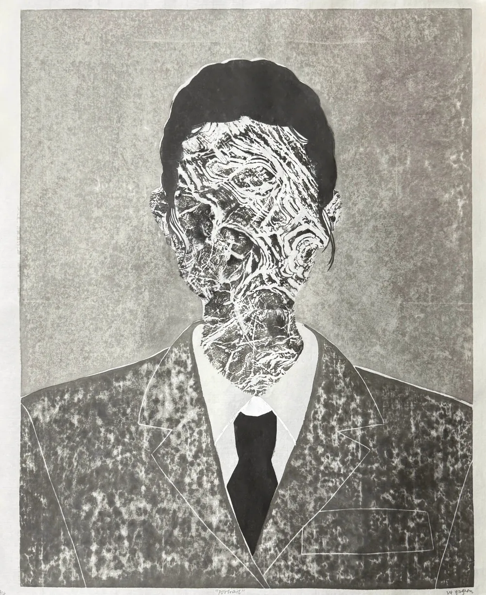

At the heart of this piece is the idea of the scholar stone, a symbol of both natural beauty and spiritual resonance. Through the delicate process of mokuhanga printmaking, the print captures the raw, elemental nature of the stone, while chine-collé adds a layer of refinement, enhancing the textural qualities of the image. The stone rubbing technique brings an additional depth, evoking the tactile connection between the artist and the natural world.这件作品的核心是文人石的意象——它既象征自然之美,也象征精神的共鸣。借由水印木刻细腻的制作过程,画面捕捉到石头原始、本真的质地;薄纸裱贴则增添了一层精致,强化了画面的肌理。拓印技法带来又一层深度,唤起艺术家与自然世界之间可触摸的联结。
This portrait is not only a visual expression but also a meditation on the philosophy of stone appreciation. The scholar stone, with its inherent simplicity, is a mirror of the spirit—an object that invites reflection and introspection. It symbolizes resilience, endurance, and the harmonious relationship between humanity and nature. Just as the scholar stone has been a symbol of wisdom and contemplation in Chinese tradition, this print aims to carry that same spirit, offering a space for the viewer to connect with their own inner world.这幅肖像不仅是视觉的表达,也是对赏石哲学的冥想。文人石以其天然的质朴,成为精神的一面镜子——一件邀人沉思与内省的物。它象征着韧性、坚忍,以及人与自然之间的和谐。正如文人石在中国传统中一直是智慧与静思的象征,这幅版画也希望承载同样的精神,为观者提供一个与自己内心世界相连的空间。
By blending these techniques, Portrait becomes a synthesis of art and philosophy, honoring the timeless tradition of stone appreciation while exploring the deeper meaning of self-reflection and spiritual growth.通过融合这些技法,《肖像》成为艺术与哲学的综合——既致敬历久弥新的赏石传统,也探索自我审视与精神成长更深层的意义。